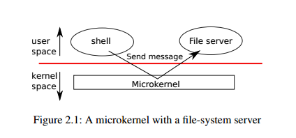
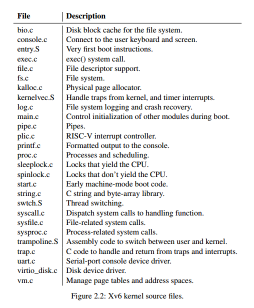
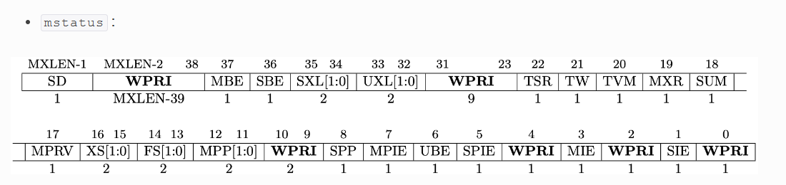
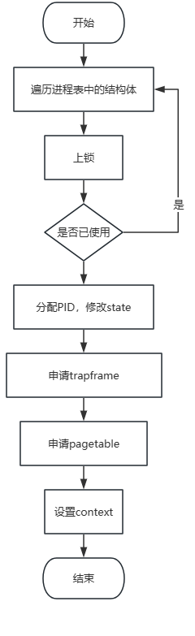

xv6-book Chapter2
Chapter2 操作系统组织结构
Chapter 1中主要提到了操作系统提供的常见接口（系统调用），并且利用这些接口实现了一些可以在shell窗口运行的程序，但是并没有进入到内核中去。
一个操作系统最核心的功能就是给用户提供使用硬件的环境，可以井井有条的运行多个程序。这个过程涉及到了几个问题：
- 操作系统如何为进程分配资源？（资源分配）
- 操作系统如何确保所有进程都能执行？即使进程数量大于CPU数量（进程调度），
- 一个进程发生故障怎样才能不影响其他进程？（隔离）
- 进程之间如何拥有安全的交互渠道?（管道）
总的来说，上面的问题可以展现出人们对操作系统的三个核心需求：多路复用，隔离和交互
Chapter 2的主要目标就是：
- 理解如何组织操作系统（单片内核）以实现这三个核心需求
- 弄清楚xv6系统启动时运行的第一个进程（xv6系统的隔离单元）
注意：Xv6运行在多核RISC-V微处理器上，它的许多底层功能（例如进程实现）是针对于RISC-V的。RISC-V是64位CPU，而xv6是用“LP64”C语言编写的，这意味着C编程语言中的long数据类型和指针大小是64位，而int是32位。本书假设读者已经在某些架构上做了一些机器级编程，并将介绍risc - v特定的思想
操作系统抽象硬件资源的意义
为什么要有操作系统？能不能让应用程序直接和硬件发生交互？
答案是肯定的，在这种情况下，每个应用程序都有自己定制的库，可以根据硬件的特性，以最适合的方式组织应用程序的代码设计，例如嵌入式设备的操作系统
但是这样做的缺点是：如果有多个应用程序同时执行（通用PC需要同时执行很多程序），每个程序必须定期的放弃自己目前占用的CPU，使得其他程序可以运行。这个过程要求程序相互信任且不会发生错误，在普遍的计算机设备上显然是不现实的
因此在大多数情况下，将应用程序隔离，禁止直接访问敏感的硬件资源，并将资源抽象成一种服务，是更好的方案
举个例子，假如有甲乙丙丁四个人去办公室盖公章，操作系统就像一个公章管理者，提供一种叫做”盖公章”的服务，甲乙丙丁四人只需要请求这个服务，操作系统就会将公章交给他使用并进行监督，一旦使用时间到了就交给下一个人。如果没有操作系统，那么每个人都可以来争抢公章并使用，一旦甲抢到了公章并且长时间使用不归还，那么其他人就一直无法完成盖公章的任务
再从计算机的角度考虑，Unix应用程序仅通过文件系统的open、write、read和close四个系统调用与存储交互，具体的磁盘管理由操作系统来完成
再比如，Unix在进程之间切换CPU，即使A程序陷入死循环，不用担心其他程序无法运行。看起来A一直死循环占用CPU，但其实每过一定时间，A会被迫暂停运行，由其他程序占用CPU
总的来说，使用操作系统抽象硬件资源的好处和API编程时”封装”的好处类似（方便好用，隐藏内部复杂的实现细节，可移植性，可维护性等等）
CPU对进程隔离的硬件级别支持
我们需要一个操作系统来为应用程序提供底层硬件的抽象服务，而系统调用接口就是操作系统具体提供服务的方式，这既为程序员提供了便利，又提供了强隔离的可能性。
为了达成这一点，操作系统必须使得应用程序不能访问其他进程的内存以及操作系统的数据结构和指令，即不同的进程之间需要相互隔离。CPU的特权等级机制为这一要求的实现提供了硬件级别的支持（通过设置一个模式位来实现）
例如，RISC-V有三种执行CPU指令的模式：User级中运行用户程序；Supervisor级中运行操作系统内核（和设备驱动）；Machine级中运行BootLoader和其它固件。 正常情况下，处理器一直在某个特权等级下运行，除非进入trap（诸如软硬件中断、异常等）才有可能发生特权等级的转换
对于现代操作系统（如Linux、Windows等）而已，用户程序都运行在用户态，当它们需要切换到内核态以获得更高权限时，需要向操作系统申请；而操作系统内核和设备驱动程序则默认就运行在内核态。每个用户线程也拥有两个栈，一个是用户态栈，一个是内核态栈，分别当处于用户态和内核态时使用。操作系统的用户态和内核态对应到处理器的硬件层面上，即为不同的特权等级。在RISC-V中，用户态一般对应User Mode，而内核态一般对应Supervisor Mode。
一般来说用户程序一直运行在用户态中，只有当发生中断才会转到内核态中
中断可以分为三类：
- 系统调用（又称陷入），在程序中使用系统调用引起；
- 异常，当应用程序运行时出现异常时（比如最常见的缺页异常）也会切换到内核态进行处理；
- 外部中断，由CPU外部引起的中断（或者说与CPU执行指令无关的事件），如I/O中断、时钟中断
单片内核与微内核
我们已经知道了操作系统的一些重要指令只有在Supervisor模式下才能执行，那么究竟操作系统的哪些指令应该放在Supervisor模式运行？一种可能性是整个操作系统驻留在内核中，因此所有系统调用的实现都以Supervisor模式运行，这种组织方式被称为单片内核。整个操作系统以完全硬件特权运行。
这种组织使得操作系统的不同部分更容易协作，例如一个操作系统可能有一个缓冲缓存，它可以被文件系统和虚拟内存系统共享；缺点是操作系统不同部分之间的接口通常很复杂，而且内核中出现错误时会导致所有应用程序崩溃（例如windows蓝屏），计算机必须重新启动。
为了减少在内核中出错的风险，操作系统设计者可以尽量减少在管理模式下运行的操作系统代码的数量，并在用户模式下执行大部分操作系统。这种内核组织称为微内核，如下图所示。

文件系统作为用户级进程运行。作为进程运行的操作系统服务称为服务器。为了允许应用程序与文件服务器交互，内核提供了一个进程间通信机制，将消息从一个用户模式进程发送到另一个用户模式进程。例如，如果像shell这样的应用程序想要读取或写入文件，它会向文件服务器发送消息并等待响应，内核中只保留最基本的功能（进程管理、内存管理和通信）
1 | |
XV6的内核源文件（位于kernel文件目录下）如下图所示，按照模块化的概念，源代码被粗略的分成多个文件，每个文件都注释了各自的作用。defs.h文件下定义了模块间的接口。

虽然kernel实现的比较简单，代码量甚至比一般的微内核还少，但因为XV6在内核中实现了整个操作系统，内核接口就是操作系统接口，所以XV6属于宏内核
操作系统的启动过程
虽然已经明白了理解了操作系统内核的概念，但是它看起来仍然是一个虚无缥缈的东西，只有先弄清楚操作系统宏观意义上是如何启动的，我们才能进一步深入操作系统内部去理解它提供的服务。
因此我们需要先弄清楚，一台计算机在刚刚通电，内存为空的情况下，CPU是如何一步一步将操作系统运行起来的？
当risc-v计算机通电后，
- 首先把CPU所有寄存器初始化（初始值由CPU制造商设置），除了CS寄存器的值设为0xFFFF，其他寄存器的值都为0，这样，根据CS 和 IP的值就可以找到指令的物理地址0xFFFF:0x0000，也就是0xFFFF0。这个地址存放CPU的第一条指令。
1
2
3
4
5CS的全拼为Code segment，即代码段寄存器，对应于内存中的存放代码的内存区域，用来存放内存代码段区域的入口地址（段基址）
IP全称instruction Pointer，指针寄存器，用来记录偏移量
CPU在执行指令时，通过CS和IP来确定要执行的下一条指令的内存地址，计算方式一般为CS左移4位然后加上IP寄存器
例如：0xFFFF0 = 0xFFFF << 4 + 0x0000 - CPU开始从寄存器读取并运行指令，0xFFFF0存放的是一条无条件跳转指令JMP，跳转到BIOS的位置。（Bios是一段写在ROM中的程序，内容不会随着断电小时）
- BIOS首先先进行POST（Power－On Self Test，加电后自检）。POST主要检测系统中一些关键设备例如内存和显卡等设备是否正常工作；如果硬件出现问题，主板会发出不同含义的蜂鸣，启动中止。如果没有问题，屏幕就会显示出CPU、内存、硬盘等信息。
- 之后CPU开始寻找引导扇区，将引导扇区中的指令加载到物理内存 0x7C00处， 修改IP寄存器的值跳转到0x7C00执行指令，从而实现了将 CPU的使用权交给引导扇区中的 Boot 程序。
- 引导加载器装载XV6内核到内存0x8000000开始的存储空间中，然后在machine mode下，CPU从kernel/entry.s处的_entry处开始执行指令
entry.S
进入到entry.S
1 | |
entry.s其实干了这些事情：为每个CPU分配了栈空间。
stack0是一个声明的外部符号，把它作为CPU的上栈的起始地址，然后按照公式，sp = stack0 + (hartid * 4096)，算出每个CPU对应的栈起始地址（sp是堆栈指针寄存器，hartid是CPU id，csr是控制和状态寄存器，csrr是读取csr寄存器的内容，la是地址加载指令，li是立即数加载指令）。
注意：此时CPU仍然处于machine mode，还没有切换到Supervisor Mode
start.c
代码比较长，因此会分成三个部分讲解
- 第一部分
完成了栈初始化后，CPU接下来要干什么？看看start.c的第一部分代码：1
2
3
4
5
6
7
8
9
10
11
12
13
14
15
16
17#include "types.h"
#include "param.h"
#include "memlayout.h"
#include "riscv.h"
#include "defs.h"
void main();
void timerinit();
// entry.S needs one stack per CPU.
__attribute__ ((aligned (16))) char stack0[4096 * NCPU];
// a scratch area per CPU for machine-mode timer interrupts.
uint64 timer_scratch[NCPU][5];
// assembly code in kernelvec.S for machine-mode timer interrupt.
extern void timervec();
__attribute__定义了entry.S中的栈，要求16bit对齐
1 | |
timer_scratch是一组共享变量，用于每个CPU的machine mode定时器中断
timervec是timer中断处理函数，在接下来的timerinit中会用到
- 第二部分
1 | |
CPU在entry.S定义了栈，然后从entry.S代码发生跳转，目的地是start.c文件中的start函数，这一段代码出现了很多读写寄存器的函数，下面进行讲解。
1 | |
无论何时，一个 RISC-V 硬件线程（hart）总是会运行在某一个特权级，而这个信息则是通过两个二进制位编码记录在了多个 CSR 寄存器（control and status registers）中，其中就包括状态寄存器（Status Register）
状态寄存器分为两种（mstatus/sstatus）作用在于记录并控制当前 CPU 的运行状态，mstatus 对应 M 模式，sstatus 对应 S 模式，具体字段如下图所示，本代码通过操作mstatus寄存器的MPP和SPP字段来达到修改CPU特权等级的目的。

如下是代码中不容易理解的一些函数：
- mstatus(Machine Status Registers)：保存了上一个特权模式，调用mret指令就立刻进入保存好的特权模式。因此设置好mstatus寄存器的值，再调用mret指令可以达到切换特权等级的目的。w_mstatus即write mstatus，写入mstatus寄存器，同理r_mstatus即read mstatus，表示读取mstatus寄存器的内容。
- mepc(Machine Exception Program Counter Registers)：设置mret的返回地址。本代码将它设置为内核main函数的地址，因此mret指令完成，CPU会查询mepc寄存器，开始执行main函数。
- satp(Supervisor Address Translation and Protection Registers)：页表寄存器，写入0就禁用了页表硬件。w_satp表示写入页表寄存器。
- asm volatile(“xxx”); “asm” 表示后面的代码为内嵌汇编, “volatile” 表示编译器不要优化代码,后面的指令保留原样。括号里面的xxx是汇编指令。
通过这些函数，我们大概能猜到整个代码的逻辑：通过设置mstatus的模式为Supervisor Mode，mret的返回地址设置为main，再调用mret成功设置特权等级，并且让CPU紧接着准备执行main代码，这样xv6就在Supervisor Mode中进入内核程序主函数了。
具体过程如下：
- 通过在寄存器
mstatus中，设置之前的特权模式为Supervisor Mode(24-27行)1
2
3
4
5
6
7
8
9
10unsigned long x = r_mstatus();
x &= ~MSTATUS_MPP_MASK;
x |= MSTATUS_MPP_S;
w_mstatus(x);
#define MSTATUS_MPP_MASK (3L << 11) // previous mode.
#define MSTATUS_MPP_M (3L << 11) 3L表示long 3，3是machine mode的编码
#define MSTATUS_MPP_S (1L << 11) 1是super
#define MSTATUS_MPP_U (0L << 11)
riscv.h文件中定义了这几个 - 通过写入main地址到寄存器
mepc，设置返回地址为main的地址(31行)1
w_mepc((uint64)main); - 通过写入0到页表寄存器
satp，在Supervisor Mode中将虚拟地址禁用(34行)1
2// disable paging for now.
w_satp(0); - 将所有的异常与中断托付给Supervisor Mode(37-39行)事实上，在RISC-V的标准定义中，所有陷阱默认都是由机器模式(M-mode)来处理的。然而，在支持操作系统的设备上往往都实现了监管者模式(S-Mode)，如果按照默认模式发生中断则应该首先陷入M-Mode下的中断处理程序，然后触发一个S-Mode下的中断再mret回S-Mode下处理，这个过程过于繁琐且需要程序员自己实现，所以：
1
2
3
4// delegate all interrupts and exceptions to supervisor mode.
w_medeleg(0xffff);
w_mideleg(0xffff);
w_sie(r_sie() | SIE_SEIE | SIE_STIE | SIE_SSIE);
RISC-V标准为了应对这种情况提出了陷阱委派机制。也就是说在M-Mode下可以配置寄存器，从而使得S-Mode下的所有陷阱都被S-Mode下的陷阱处理函数自动接管。有两个寄存器，medeleg和mideleg，分别用来管理异常和中断的委派。
- 使Supervisor Mode能够接触到所有物理内存(43-44行)\
1
2
3
4// configure Physical Memory Protection to give supervisor mode
// access to all of physical memory.
w_pmpaddr0(0x3fffffffffffffull);
w_pmpcfg0(0xf); - 请求时钟中断，clock初始化（具体实现在后文讲解）
1
2// ask for clock interrupts.
timerinit(); - 获取CPU的ID并保存在tp寄存器中
1
2
3// keep each CPU's hartid in its tp register, for cpuid().
int id = r_mhartid();
w_tp(id);
- 第三部分
1 | |
第三部分是时钟中断的初始化，可以先放着不管，后续有实验内容帮助理解中断的过程。
main.c
1 | |
在执行完 start 函数后，开始执行 main 函数。首先，判断当前的 CPU 的 ID 是否为主 CPU（cpuid() == 0） 。
如果是主 CPU ，则执行一系列的初始化操作，包括：
consoleinit();控制台初始化；printfinit();打印模块初始化；kinit();和kvminit();创建内核页表；kvminithart();打开分页机制；procinit();创建进程表；trapinit();和trapinithart();和plicinit();设置系统中断向量和系统中断初始化；plicinithart();设备中断初始化；binit();和iinit();磁盘缓冲和磁盘节点的初始化；fileinit();文件系统的初始化；virtio_disk_init();磁盘初始化；userinit();创建第一个用户进程，第一个进程执行一个小程序 user/initcode.S ，该程序通过调用 exec 系统调用重新进入内核；sync_synchronize();是 gcc 提供的原子操作，保证内存访问的操作都是原子操作；started = 1;是设置初始化完成的标志。
如果不是主 CPU ，首先循环等待主 CPU 初始化完成，当主 CPU 初始化完成，则初始化完成标志 started 为 1 ，跳出循环。然后同样是：
sync_synchronize();gcc 提供的原子操作，保证内存访问的操作都是原子操作。kvminithart();打开分页功能trapinithart();和plicinithart();设置系统和设备的中断初始化。
以上函数的声明都包含在kernel/defs.h文件中。
第一个用户进程
从main.c代码中我们可以发现在启动第一个进程之前，还有很多准备工作。我们暂时不去看他们，先学习第一个进程对应的代码：
1 | |
这段代码内部完成了很多事情，把他拆开来看：
1. allocproc函数（构建新进程）
1 | |
这是一个使用static修饰的函数，返回一个进程结构体指针的。static 常在两种情况下使用：
- 变量：static变量不会在函数重新进入时再次赋初值；不会在函数结束时而释放（存储在全局区）
- 函数：static函数只能在本文件中调用，不能在其他文件中调用
函数的逻辑如下图：

在新建进程时有三个结构体非常重要，后续会进一步讲解，这里只需要知道它们是干什么的即可：
- 保存进程运行情况的trapframe（栈帧）
- 上下文切换时记录状态的context
- pagetable（页表）
2. 分配物理内存（虚拟地址映射）
在申请完进程结构体后，进程中保存的栈指针其实是个虚拟地址，让进程有自己在使用整个内存空间的错觉，其实要真正使用，还需要为进程分配真实的物理地址
1 | |
上述代码涉及到虚拟内存和页表相关的知识，后续会进一步讨论
在介绍完第一个进程创建过程中非常重要的两个函数调用后，我们可以回头再看第一个进程初始化的代码：
1 | |
上述代码中，完成了进程创建和虚拟地址映射两个操作后，剩下的就是对进程的细微调整
- 初始化栈帧的epc指针和sp指针
- 为进程命名
- 指定工作目录
- 修改进程状态为就绪态，随时等待CPU”宠幸”
- 完成对进程结构体的更改，释放锁
然而完成了对第一个进程结构体的创建，不代表第一个进程已经运行起来了。我们还需要理解进程这个结构体是怎么运行起来的（如何被CPU使用）
2. scheduler（进程调度）
在main.c函数中，我们可以发现完成userinit后会调用scheduler()函数，这个函数是一个死循环：
1 | |
每个CPU都会执行这个代码，在初始化CPU结构体之后开始循环。具体的逻辑很容易理解：
- 打开中断（在之前的操作中，中断是关闭的，在开始执行进程前要打开中断避免死锁）
- 遍历进程表，找到就绪态的进程
- 给进程上锁，运行进程
- 运行结束，释放锁
- 继续遍历
可以发现核心代码就是循环体中的swtch(&c->context, &p->context);
为什么把进程结构体的上下文和CPU结构体的上下文传入swtch就可以实现进程的切换了？
1 | |
swtch函数其实是用汇编代码实现的（swtch.S），它的作用就是切换CPU运行时使用的寄存器的值，也就是进程的context结构体中记录的内容。具体来说，上面的代码就是实现了先保存现在寄存器的值到a0寄存器指向的位置，再加载新的值到a1寄存器指向的位置：
- sd是指store doubleword，将寄存器的值存入存储器
- ld则是load doubleword，将存储器的值加载进寄存器
- ret指令，CPU会将PC重置为ra寄存器的值
a0寄存器对应了swtch函数的第一个参数，是当前进程的context对象的地址，保存它的意义在于当前进程因为各种原因被调度走了，下次还可以在上次CPU中断的位置继续完成任务。
a1寄存器对应了swtch函数的第二个参数，是即将要CPU执行的进程对应的context结构体地址
注意：一般来说，ra寄存器存放目前进程代码执行到的位置，方便下一次CPU调度该进程时可以接着执行，但由于是第一个进程，ra寄存器实际指向了我们想要执行的第一个程序
还记得吗？在新建第一个进程的时候，p->context.ra = (uint64)forkret; 新进程的ra寄存器的值被设定为forkret函数的地址，所以第一个进程实际上会先完成forkret函数的工作
1 | |
forkret函数会初始化文件系统，注意：文件系统的初始化代码因为涉及到sleep系统调用，因此必须通过一个常规的进程运行，而不是再上文的main.c中进行
完成初始化后，程序会执行usertrapret()函数，这是一个从内核态返回用户态的函数。
1 | |
这部分代码涉及到了中断的内容，会在后续章节学习，只需要知道：
- 在这段代码中先将内核层级设定为用户态
- 通过
w_sepc(p->trapframe->epc);设置PC（程序计数器）的值为寄存器中预先存好的值 - CPU因为从PC处执行指令，因此执行
p->trapframe->epc指向的代码。
在第一个进程中，epc指向虚拟地址0，该虚拟地址绑定的物理地址实际指向initcode
1 | |
这其实是initcode二进制代码的十六进制显示，也就是说CPU要开始加载initcode代码
也就是下面的汇编代码：
1 | |
这段汇编代码的主要作用是触发系统调用exec（这个系统调用的作用前文已经讲过），执行名为init的程序（由user/init.c编译得到），如果exec失败，则循环运行一个不会返回的系统调用exit
init的代码如下：
1 | |
init会在需要的情况下创建一个新的控制台设备文件，然后把它作为描述符0，1，2打开。接下来它将不断循环，开启控制台 shell，处理没有父进程的僵尸进程，直到 shell 退出，然后再反复。系统就这样运行起来了。
现实情况
大多操作系统都采用了进程这个概念，而大多的进程都和 xv6 的进程类似。但是真正的操作系统会利用一个显式的链表在常数时间内找到空闲的 proc，而不像本文 allocproc 中那样花费线性时间；xv6 使用的是朴素的线性搜索，找第一个空闲的 proc（详情见前文的scheduler.c代码）。
注意：xv6 的地址空间结构有一个缺点，即无法使用超过 2GB 的物理 RAM。当然我们可以解决这个问题，不过最好的解决方法还是使用64位的机器。
结尾
完成了对书籍第二章内容的阅读和扩展阅读，写成了这一篇笔记，在开始第三章学习之前，要先进入到系统调用相关的练习中了。
感谢你能看到这里！幸苦了！！